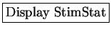

Next: Calculating the STRF
Up: User Manual
Previous: Displaying Input
Contents
In this stage, the second order statistics
of the stimulus are calculated and the STRF is estimated
by clicking the
button. The stimulus auto-correlation
matrix, the stimulus-response cross correlation and modulation
spectrum can be displayed
by clicking the
 button. The estimated
STRF and its related analysis can be displayed by clicking
the
button.
Subsections
2004-08-09